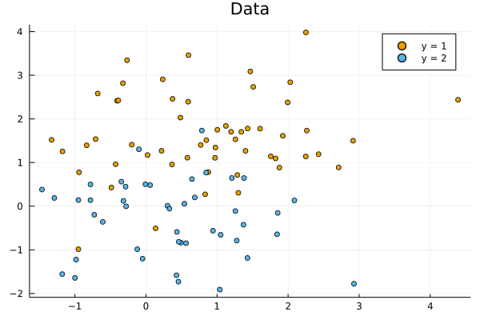
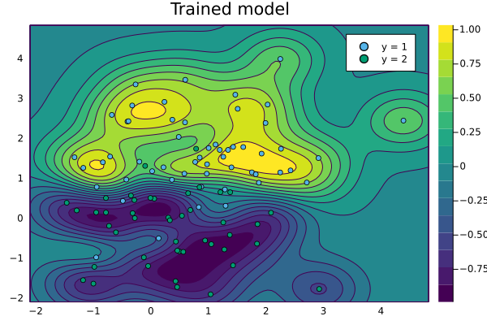

Support Vector Machines

You are seeing the HTML output generated by Documenter.jl and Literate.jl from the Julia source file. The corresponding notebook can be viewed in nbviewer.
TODO: introduction
We first load the packages we will need in this notebook:
using KernelFunctions
using Distributions, LinearAlgebra, Random
using Plots;
default(; legendfontsize=15.0, ms=5.0);
# Set plotting theme
theme(:wong)
# Set seed
Random.seed!(1234);Data Generation
We first generate a mixture of two Gaussians in 2 dimensions
xmin = -3;
xmax = 3; # Limits for sampling μ₁ and μ₂
μ = rand(Uniform(xmin, xmax), 2, 2) # Sample 2 Random Centers2×2 Matrix{Float64}:
0.545068 0.397424
1.60078 -0.239488We then sample both the input $x$ and the class $y$:
N = 100 # Number of samples
y = rand((-1, 1), N) # Select randomly between the two classes
x = Vector{Vector{Float64}}(undef, N) # We preallocate x
x[y .== 1] = [rand(MvNormal(μ[:, 1], I)) for _ in 1:count(y .== 1)] # Features for samples of class 1
x[y .== -1] = [rand(MvNormal(μ[:, 2], I)) for _ in 1:count(y .== -1)] # Features for samples of class 2
scatter(getindex.(x[y .== 1], 1), getindex.(x[y .== 1], 2); label="y = 1", title="Data")
scatter!(getindex.(x[y .== -1], 1), getindex.(x[y .== -1], 2); label="y = 2")
Number of samples:
#N = 100;Select randomly between two classes:
#y = rand([-1, 1], N);Random attributes for both classes:
#X = Matrix{Float64}(undef, 2, N)
#rand!(MvNormal(randn(2), I), view(X, :, y .== 1))
#rand!(MvNormal(randn(2), I), view(X, :, y .== -1));Create a 2D grid:
#xgrid = range(floor(Int, minimum(X)), ceil(Int, maximum(X)); length=100)
#Xgrid = ColVecs(mapreduce(collect, hcat, Iterators.product(xgrid, xgrid)));Model Definition
TODO Write theory here
Kernel
Create kernel function:
k = SqExponentialKernel() ∘ ScaleTransform(2.0)
λ = 1.0; # Regularization parameterPredictor
We create a function to return the optimal prediction for a test data x_new
Optimal prediction:
f(x, X, y, k, λ) = kernelmatrix(k, x, X) / (kernelmatrix(k, X) + λ * I) * y;f(x, X, y, k, λ) = kernelmatrix(k, x, X) * ((kernelmatrix(k, X) + λ * I) \ y)
Loss
We also compute the total loss of the model that we want to minimize
hingeloss(y, ŷ) = maximum(zero(ŷ), 1 - y * ŷ) # hingeloss function
function reg_hingeloss(k, x, y, λ)
ŷ = f(x, x, y, k, λ)
return sum(hingeloss.(y, ŷ)) - λ * norm(ŷ) # Total svm loss with regularisation
end;Testing the trained model
We create a 2D grid based on the maximum values of the data
N_test = 100 # Size of the grid
xgrid = range(extrema(vcat(x...)) .* 1.1...; length=N_test) # Create a 1D grid
xgrid_v = vec(collect.(Iterators.product(xgrid, xgrid))); # Combine into a 2D gridWe predict the value of y on this grid on plot it against the data
y_grid = f(xgrid_v, x, y, k, λ) # Compute prediction on a grid
contourf(
xgrid,
xgrid,
reshape(y_grid, N_test, N_test)';
label="Predictions",
title="Trained model",
)
scatter!(getindex.(x[y .== 1], 1), getindex.(x[y .== 1], 2); label="y = 1")
scatter!(getindex.(x[y .== -1], 1), getindex.(x[y .== -1], 2); label="y = 2")
xlims!(extrema(xgrid))
ylims!(extrema(xgrid))
contourf(xgrid, xgrid, f(Xgrid, ColVecs(X), k, 0.1)) scatter!(X[1, :], X[2, :]; color=y, lab="data", widen=false)
This page was generated using Literate.jl.